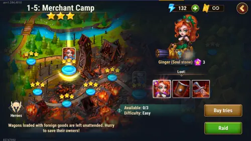
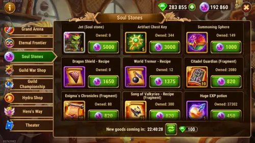
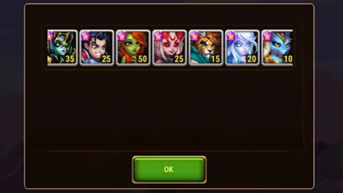

Mejores Farmeos para Principiantes en Hero Wars Alliance
- Por: Alexandre Domingos. .
¿Y si uno de los mejores farmeos para principiantes de Hero Wars Alliance estuviera escondido en una misión que puedes completar todos los días? Llevo años usando el mismo truco sencillo de Ginger, y sigue generando valor mucho después de que alcanza la Estrella Absoluta. No es un atajo para whales ni una apuesta: es un hábito repetible que convierte unos cuantos intentos diarios en Piedras de Alma, Monedas de Alma, equipamiento y un crecimiento constante de la cuenta.
En esta guía, te mostraré las misiones que todavía considero valiosas para farmear, por qué priorizo la energía frente a las invocaciones aleatorias al principio y cómo cada elección puede fortalecer a más de un héroe o equipo. Mi objetivo es ayudarte a dejar de gastar energía sin un plan. Las recompensas pueden parecer pequeñas hoy, pero, cuando repites los farmeos correctos durante meses, resulta más fácil equipar, evolucionar y preparar tu plantilla para batallas más difíciles.
Mira a continuación mi guía completa de farmeo para principiantes de Hero Wars Alliance para ver estas rutas dentro del juego. La estrategia escrita, la lista de misiones y mis recomendaciones continúan justo después del vídeo.

📋 Índice de los Mejores Farmeos para Principiantes
- El Truco de las Piedras de Alma de Ginger
- Por Qué Ginger Sigue Siendo Importante en Estrella Absoluta
- Modo Reino y Prioridades de las Monedas de Alma
- La Mejor Inversión de Energía para Principiantes
- Misión 9-1 de Aurora: Mi Segundo Mejor Farmeo
- Por Qué las Misiones Heroicas Son Tan Eficientes
- Mis Farmeos Diarios Favoritos de Objetos Violetas
- Conclusión: La Constancia Vence a la Suerte

El Truco de las Piedras de Alma de Ginger
El primer farmeo que, en mi opinión, todo principiante debería conocer es la Misión Heroica 1-5, Merchant Camp (Campamento de Mercaderes). He farmeado a Ginger allí casi todos los días desde que empecé a jugar Hero Wars. Lo que hace especial a esta misión es su fiabilidad: concede una Piedra de Alma de Ginger en cada intento.

Por lo tanto, tus tres intentos normales producen tres Piedras de Alma de Ginger garantizadas. Yo también gasto 20 esmeraldas para renovar los intentos, con lo que alcanzo un total de seis Piedras de Alma al día. Seis puede no parecer una cifra impresionante, pero este es exactamente el tipo de farmeo cuyo valor se vuelve evidente después de semanas, meses y años.
Ginger es probablemente la heroína para la que más Piedras de Alma he reunido. No necesitas convertirla en el centro de tu equipo principal para beneficiarte del farmeo; el objetivo a largo plazo es la moneda que terminan generando esas piedras adicionales.
Por Qué Ginger Sigue Siendo Importante en Estrella Absoluta
Una pregunta habitual entre principiantes es: ¿por qué seguir farmeando a Ginger después de que alcanza la Estrella Absoluta? Porque sus Piedras de Alma adicionales pueden cambiarse por Monedas de Alma en la Tienda de Piedras de Alma. Conseguir tu primer héroe de seis estrellas desbloquea esta tienda y convierte cada piedra sobrante en progreso útil para la cuenta.

La tienda puede proporcionar recursos valiosos, como:
- equipamiento y materiales de fabricación;
- Llaves del Cofre de Artefactos;
- Esferas de Invocación de Titanes; y
- Piedras de Alma de Jet.
Mi recomendación sincera para los principiantes es no apresurarse con Jet. Está mucho más lejos del meta actual que en años anteriores. Yo gastaría la mayoría de las Monedas de Alma en equipamiento y materiales de progreso que mejoren a los héroes que ya utilizas. Un recurso que ayuda hoy a tu equipo principal suele ser mejor que un proyecto secundario largo y costoso.
Modo Reino y Prioridades de las Monedas de Alma
El Modo Reino se ha convertido en otra excelente fuente de valor para las cuentas nuevas. Puede proporcionar cada día Piedras de Alma de héroes fuertes, recursos de Titanes y materiales útiles de progreso. Varios de los héroes disponibles allí son mejores inversiones que la propia Ginger.

Eso no vuelve obsoleta la ruta de Ginger. Considero que los dos sistemas se complementan: el Modo Reino ayuda a construir la plantilla, mientras que el excedente garantizado de Ginger sigue alimentando la Tienda de Piedras de Alma y completando las Misiones Heroicas diarias. Más Piedras de Alma adicionales significan más Monedas de Alma, y más Monedas de Alma significan menos tiempo esperando el equipamiento que necesitan tus equipos.
La Mejor Inversión de Energía para Principiantes
Uno de los mayores errores que veo cometer a los principiantes es intentar farmear muchas Misiones Heroicas sin comprar suficiente energía. Mi recomendación es realizar las dos compras diarias de energía que cuestan 50 esmeraldas cada una. Cada compra concede 120 de energía, por lo que 100 esmeraldas compran 240 de energía adicional para farmear.
En mi opinión, esta es una de las mejores inversiones habituales de esmeraldas para principiantes y jugadores free-to-play. La energía adicional significa más Piedras de Alma, más piezas de equipamiento, una promoción más rápida de los héroes y más experiencia para la cuenta. Las invocaciones aleatorias al principio pueden parecer emocionantes, pero la energía te permite controlar lo que estás construyendo. En Hero Wars Alliance, la energía es progreso.

Misión 9-1 de Aurora: Mi Segundo Mejor Farmeo
Después de la ruta garantizada de Ginger, la Misión Heroica 9-1, Shore (Costa) es mi segundo farmeo favorito. Esta misión de Aurora siempre ofrece a tu cuenta una oportunidad útil de progresar: puedes recibir Piedras de Alma de Aurora o componentes importantes de equipamiento violeta.
Entre sus recompensas principales se encuentran Cabeza del Minotauro, Mano de Gloria y Espada del Desierto. Estos componentes aparecen repetidamente en recetas de fabricación, lo que hace que la misión sea valiosa incluso cuando no obtienes una Piedra de Alma de Aurora. Con la misma energía, trabajas en una heroína y amplías tu inventario general de equipamiento.
Por Qué las Misiones Heroicas Son Tan Eficientes
Las Misiones Heroicas te ofrecen dos posibles ganancias: Piedras de Alma de héroes y materiales de equipamiento. No conseguir una Piedra de Alma no significa necesariamente desperdiciar energía cuando la misión también proporciona un componente que tu equipo necesitará pronto.
Por eso prefiero las misiones cuyo equipamiento sigue siendo útil en muchas recetas de fabricación. En lugar de farmear solamente el siguiente objeto visible, construyo poco a poco una reserva de los componentes que suelen limitar el progreso. Esa reserva facilita mucho la promoción de nuevos héroes o el fortalecimiento de un segundo y tercer equipo más adelante.
Mis Farmeos Diarios Favoritos de Objetos Violetas
Estas son las Misiones Heroicas que repito con regularidad para obtener componentes violetas importantes de fabricación. Utiliza esta lista como un mapa de prioridades y después favorece los objetos que realmente necesitan tus héroes principales actuales.
| Héroe o ruta | Misión Heroica | Objetivo principal del farmeo | Por qué lo farmeo |
|---|---|---|---|
| Keira | 7-1 | Mano de Gloria | Un componente violeta frecuente de fabricación |
| Artemis | 8-10 | Sello del Pastor | Útil para recetas de equipamiento más avanzadas |
| Artemis | 11-6 | Amuleto de Alucard | Un objetivo valioso de fabricación para el final del juego |
| Ruta de Campaña | 7-6 | Espada del Desierto | Uno de los objetos violetas que utilizo con mayor frecuencia |
| Fox | 6-2 | Matagigantes | Ayuda a fabricar equipamiento para varios héroes |
| Daredevil | 6-10 | Cabeza del Minotauro | Combina la posibilidad de obtener una heroína con un componente útil |
| Daredevil | 8-1 | Corazón Llameante | Otro farmeo sólido de fabricación a largo plazo |
| Heidi | 6-6 | Ruta de equipamiento violeta | Una parada adicional eficiente cuando sus recompensas coinciden con tus necesidades |
No intentes renovar todas las rutas cada día. Primero, asegura las dos compras de energía por 50 esmeraldas, farmea a Ginger si quieres el motor garantizado de Monedas de Alma y después gasta el resto de tu energía en el equipamiento que está bloqueando a tus cinco héroes principales. Tu plan de farmeo debe estar al servicio de tu plan de equipo.
Conclusión: La Constancia Vence a la Suerte
Las cuentas fuertes de Hero Wars Alliance no se construyen en un solo día de suerte. Se construyen repitiendo decisiones pequeñas y eficientes. Por eso sigo farmeando muchas de estas misiones después de años jugando: las Piedras de Alma garantizadas de Ginger generan Monedas de Alma, las Misiones Heroicas de gran valor cubren las carencias de equipamiento y las compras diarias de energía mantienen todo el sistema en marcha.
Empieza con una rutina que puedas permitirte y mantener. Si tu equipo principal necesita un objeto violeta específico, prioriza ese obstáculo en lugar de copiar todas las rutas a ciegas. El mejor farmeo es el que acerca a tus héroes y equipos actuales a su siguiente mejora verdaderamente útil.
¿Cuál es tu farmeo diario favorito en Hero Wars Alliance? ¿También utilizas el truco de Ginger? Comparte tu experiencia en los comentarios. Tu ruta puede ayudar a otro jugador a construir una cuenta más fuerte sin desperdiciar energía.
¡Explora Nuevas Estrategias con Nuestras Guías Destacadas!


¡Deja Tu Opinión!
¿Estas rutas de farmeo para principiantes mejoraron tu planificación diaria? ¿Hay alguna Misión Heroica que crees que merece un lugar en la lista de Alexandre? Participa en la sección de comentarios del Blog Alexandre Games para compartir tu farmeo favorito, hacer preguntas o sugerir una actualización.
Haz clic en el botón de abajo para comenzar: